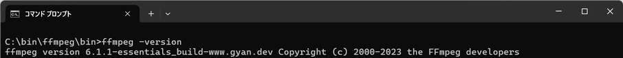
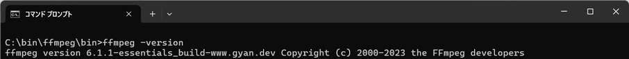

FFmpegインストール
インストール
- 開発元の[Download]からダウンロード
- Windowsアイコンを選択し、Windows builds from gyan.devを選択
- previout release version: 6.1.1のessentials_build.zipを選択してダウンロード
- ダウンロードしたzipファイルを解凍して適当な場所に置く
- binフォルダに移動してバージョンを確認する

- binフォルダにあるffmpeg.exeをそのまま実行できるが、他フォルダから使用する場合にはパスを通す必要がある
パス設定
- [コントロールパネル]から[システムとセキュリティ]-[システム]-[システムの詳細設定]を選択し、管理者のパスワードを入力
- [環境変数]を選択
- システム環境変数のPathを選択して[編集]
- ffmpeg.exeのあるbinフォルダのパスを追加し[OK]
- [OK]や[X]で開いた画面を閉じる
